武 大 时 光 机
1893 - 2021
进入历程
1893
年
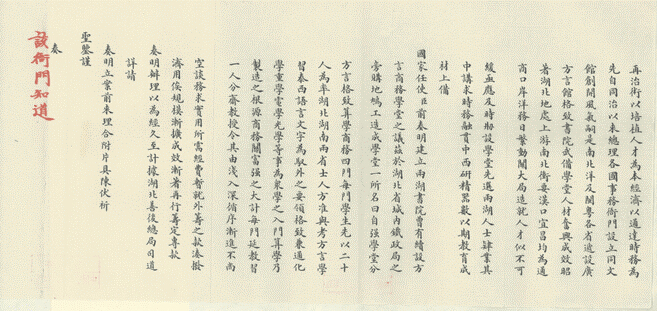
1893年11月29日，湖广总督张之洞向清朝光绪帝上奏《设立自强学堂片》。
其认为“
盖闻经国以自强为本
”、“
自强之道，以教育人才为先
”，故取“
自强
”二字,名曰“
自强学堂
”。
1893~
1926
年
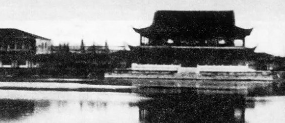
自强学堂起设于湖北武昌三佛阁大朝街口。
开办之初，设方言、算学、格致、商务四门。
1896年，矿务、化学并入自强学堂，后增加自然、工程教育，方言一门逐步扩大为英语、法语、德语、俄语、东文（日语）5种语言。
1902年10月，自强学堂迁往武昌东厂口，改名方言学堂, 课程设有地理、历史、算术、公法、交涉等。
1913年，北洋政府教育部成立后，决定以原方言学堂的校舍、图书、师资为基础，改建国立武昌高等师范学校。
1922年，改四部为8系，即教育哲学系、国文系、英语系、数学系、理化系、历史社会学系、生物系、地质系。
1926年，国立武昌大学与国立武昌商科大学、湖北省立医科大学、湖北省立法科大学、湖北省立文科大学、私立武昌中华大学等合并为国立武昌中山大学（又称国立第二中山大学），设有大学部和文、理、法、经、医、预6科、17个系、2个部。
1928
年
历经传承演变，1928年，南京国民政府以原国立武昌中山大学为基础，建国立武汉大学，下设文、法、理、工4个学院，是近代中国第一批国立大学。
1929
年
1929年2月，法学家王世杰成为国立武汉大学首位正式校长。
他认为国立武汉大学不能满足于拥有的4大学院，提出要把学校办成拥有文、法、理、工、农、医6大学院的万人大学。
聘皮宗石教授为法学院院长，闻一多教授为文学院院长、王星拱教授为理学院院长、石瑛为工学院院长。
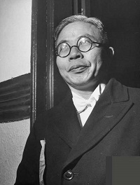
王世杰
字雪艇，湖北崇阳人。著名的法学家，民国时期国立武汉大学首任校长。
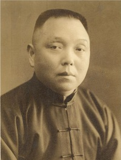
皮宗石
字皓白，湖南长沙人。1928年9月应邀到国立武汉大学任社会科学院教授、院长，讲授财政学课程。
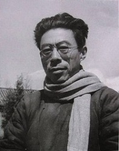
闻一多
本名闻家骅，字友三，中国现代诗人、学者、民主战士，1928年8月担任武汉大学文学院院长，第二年，辞去武汉大学文学院院长职务。
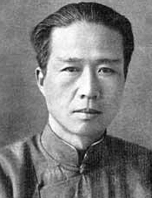
王星拱
字抚五，安徽怀宁人。著名教育家、化学家、哲学家。与王世杰、李四光等负责筹建国立武汉大学，任国立武汉大学化学系首任系主任。
抗战时期
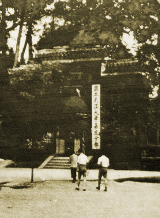
(嘉定时期武大校本部)
1937年8月19日，国民政府教育部长王世杰签发《战区内学校处置办法》。
此后，69所高校内迁。其中，迁往四川的有48所之多。国立武汉大学于1938年，迁往嘉定（今乐山），并在此度过了8年时光。
1949
年
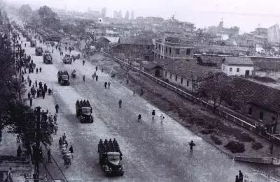
(1949年5月，解放军进入武汉市区)
1949年武汉解放，国立武汉大学被中国共产党接管并更名为武汉大学，继续办学。
新中国成立后
1950年代初期，新成立的中华人民共和国政府借鉴苏联的社会主义教育模式，对国内高校进行史无前例的大规模院系调整。
院系调整前武汉大学有6个学院21个系，院系调整后只有文理科目的中文、历史、政治、数学、物理、化学、生物共7个系保留建制
此后数十年，武汉大学逐渐恢复和增设院系专业。
21世纪
2000年8月2日，武汉大学、武汉水利电力大学、武汉测绘科技大学、湖北医科大学四校正式合并组建新的武汉大学。
2001年1月初，合并后的武汉大学院系设置方案敲定。武汉大学分为人文科学、社会科学、理学、工学、信息科学、医学六大学部，下设28个学院、98个系。
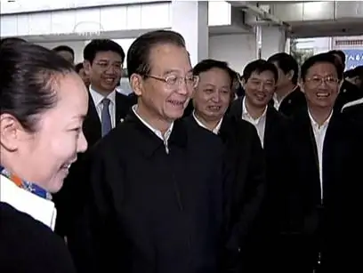
国务院总理温家宝参观学校自主创新成果展
习近平总书记考察武汉大学杂交水稻实验基地
英国首相特雷莎·梅对武汉大学进行访问
18年11月29日，Science以Celebrating 125 Years of Academic Excellence: Wuhan University(1893–2018)为题， 在线推出武大125周年校庆特刊，介绍武汉大学发展近况，以及人文社科和自然科学的研究进展。
校长窦贤康院士发表刊首致辞。
21世纪武大成就属属
如 今
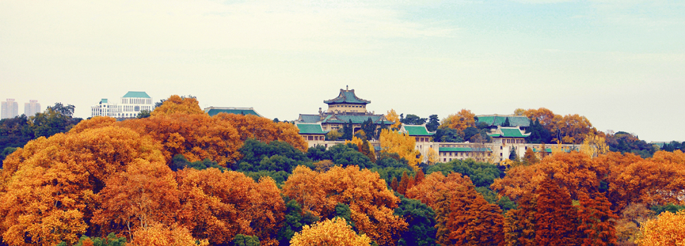
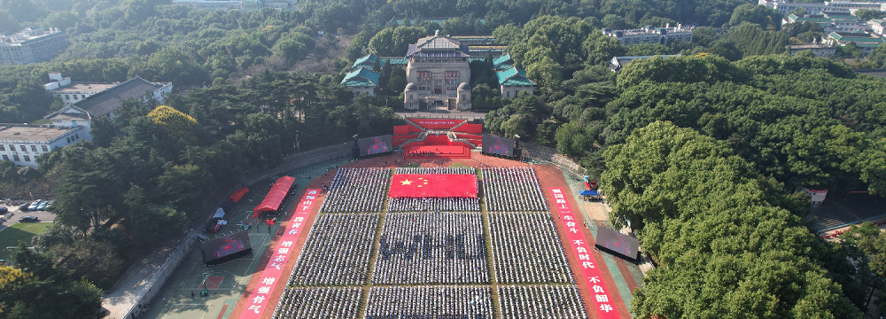
❮
❯
文本